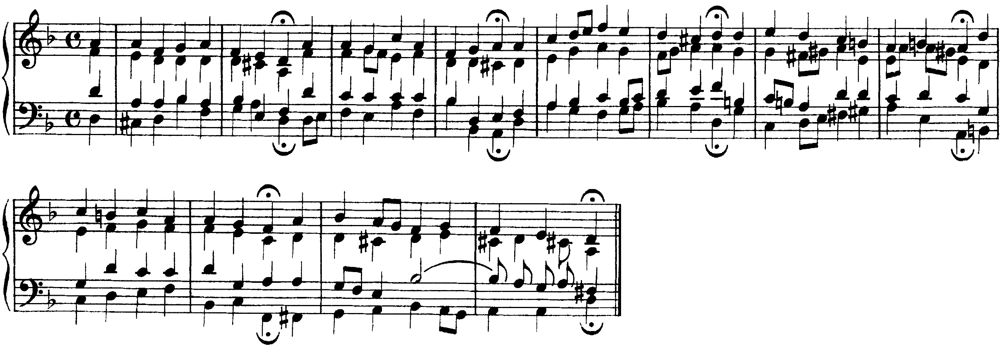
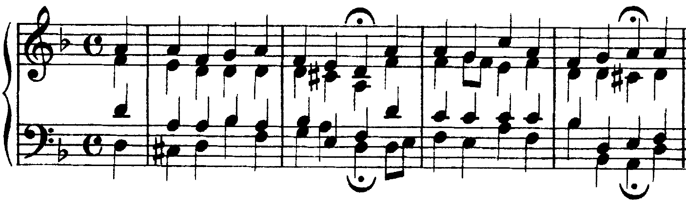
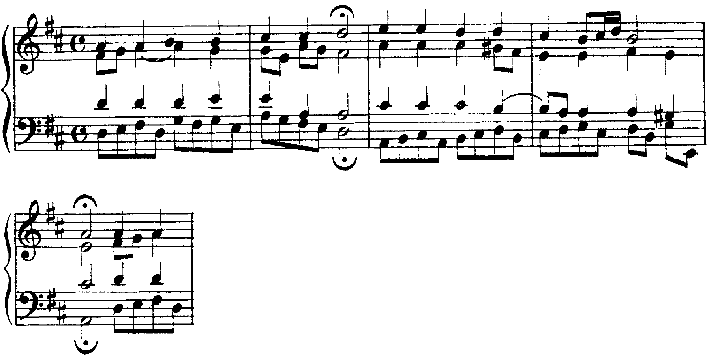

Il II e il VI a quattro parti: da dove vengono, dove vanno, come si collegano al I, al IV e al V.
L’accordo secondario acquista il significato di ombra armonica, di variante del corrispettivo principale cui è legato dalla comunanza di ben due suoni.
Carlo Marenco, Manuale d’armonia, p. 1
Lezione di due ore. Seconda ora: Analisi: un corale di Bach, grado per grado; il III e il VII. I compiti per casa sono alla fine.
B8Il ii grado, p. 182 · B11Il vi (VI) di sostituzione e di prolungamento, pp. 208–211
Sezione B, unità 8, lezione 29; unità 11, lezioni 40–41. Il quadro delle funzioni: C6, lezione 22, pp. 274–275.
I gradi principali sono il I, il IV e il V; i secondari (sopratonica, mediante, sopradominante, sensibile) tendono ad assimilarsi a uno dei principali. «La triade del VI grado manifesta forti somiglianze con quella di tonica (due suoni in comune) rapportandosi come una sorta di relativa minore, di parallela o sostituta della tonica, quella del II grado, per gli stessi motivi, alla triade del IV» (Marenco, Manuale d’armonia, p. 1). Il III e il VII stanno con il V: sono l’argomento della U6 L2.
| sol maggiore | la minore | suoni in comune | |
|---|---|---|---|
| II | la–do–mi (minore) | si–re–fa (diminuita) | con il IV: do–mi / re–fa |
| VI | mi–sol–si (minore) | fa–la–do (maggiore) | con il I: sol–si / la–do |
Il II è una triade diminuita: «predilige, come l’accordo di sensibile, il primo rivolto. Raddoppia di preferenza la terza o in alternativa la fondamentale […], mai la quinta», che è il sesto grado della scala armonica (Marenco, pp. 31–32). In la minore: II⁶ con il re al basso, il re raddoppiato, il fa una volta sola.
Il II ha una «tendenza risolutiva preferita al V» (Marenco, p. 48): sta dove sta il IV, prima della dominante. Nel collegamento II–V del modo maggiore «il collegamento melodico ha carattere preferenziale»: le tre voci superiori vanno per moto contrario al basso; nel minore è d’obbligo. Dopo il IV il II arriva spesso sullo stesso basso, come II⁶ (Marenco, p. 24).
Otto battute in sol maggiore. Alla b. 2 il II è allo stato fondamentale (la al basso e al contralto): il basso sale di quarta, il soprano scende mi–re, il contralto la–fa♯, il tenore do–la, tutti per moto contrario. Alla b. 4 il II⁶ ha il do al basso e al tenore: la terza raddoppiata. Alla b. 6 il IV e il II⁶ stanno sullo stesso do: il soprano sale do–mi, il tenore sol–la, il mi del contralto resta. Alla b. 3 c’è anche il VI dopo il I: sol e si, i due suoni comuni, restano fermi al contralto e al tenore.
Leggere il basso come fondamentale. Il do delle bb. 4 e 6 porta il IV (do–mi–sol) o il II⁶ (la–do–mi): decide il la, che c’è solo nel II. Muovere tutte le voci con il basso. Se nel II–V le voci superiori salgono insieme al basso, il mi e il la (quinta e ottava sul la) diventano la e re, quinta e ottava sul re: quinte e ottave parallele. Il collegamento si fa per moto contrario.
Il VI va «a tutti i gradi» e, come gli altri secondari, segue volentieri il suo principale: I–VI (Marenco, p. 48). Dopo il V (cadenza d’inganno) «la sensibile deve salire alla tonica; le altre parti devono procedere per moto contrario rispetto al basso», e il VI «raddoppia la terza e non più la fondamentale» (p. 25). Nel minore il VI che va al V raddoppia ancora la terza, «per evitare l’intervallo melodico di seconda eccedente» (p. 26).
Nove battute in la minore. Alla b. 1 il VI segue il I: il do del soprano resta, il basso scende di terza. Alla b. 3 il V va al VI: il sol♯ del tenore sale al la, il soprano e il contralto scendono, e il VI ha due la (la terza). Subito dopo il VI torna al V: il fa resta soltanto al basso, e nessuna voce deve fare fa–sol♯. Alla b. 5 il fa del basso porta il IV⁶ (c’è il re), alla b. 6 porta il VI: lo stesso basso, due accordi. Alla b. 7 il II⁶ ha il re raddoppiato e il fa una volta sola.
Raddoppiare la fondamentale del VI dopo il V, come in un accordo qualsiasi. Nella b. 3 un secondo fa in una voce superiore avrebbe due strade: salire al sol♯ (seconda eccedente) o andare con il basso (ottave). Con la terza raddoppiata il problema non si presenta.
| grado | va di preferenza a | da evitare |
|---|---|---|
| I | tutti i gradi | — |
| VI | tutti i gradi: II, IV, V soprattutto | — |
| IV | tutti i gradi: V, I, II | — |
| II | V (o il VII, U6 L4) | II–I, II–IV |
| V | I, VI (inganno) | V–IV, V–II |
Il quadro è quello di Marenco, p. 48, ridotto ai gradi studiati fin qui. Due regolarità: i secondari seguono il loro principale (I–VI, IV–II, V–VI) e vanno verso il V; letti all’indietro dalla tonica, VI–II–V–I sono quattro fondamentali per quinte discendenti, la catena della U6 L4.
L’ultima parte del corale BWV 1/6 (U3, U4 L2 e L8) è in fa maggiore. Le bb. 15–16 alternano I e V sul basso in crome. Alla b. 17 la cadenza mette in fila il II (sol–si♭–re, primo movimento), il VI (re–fa–la, secondo), il II⁶ (si♭ al basso, terzo) e il V (quarto): il VI sta fra le due forme del II e il basso fa sol–re–do–si♭–do. Alla b. 18, dopo il I, il soprano sale all’ottava: VI sul terzo movimento, poi il III (la–do–mi), che si studia nella U6 L2. La cadenza finale della b. 20 passa per il si naturale: è una dominante secondaria, argomento dell’UdA 7.
Si ascoltano le bb. 13–20 seguendo il basso. Al secondo ascolto, alla b. 17, si dice ad alta voce il grado su ogni movimento: II, VI, II⁶, V; poi I.
Realizza a quattro parti, con il re al soprano. 1. Sotto ogni nota grado e stato: il sol porta il IV o il II⁶; il si della b. 6, dopo il V, porta il VI d’inganno. 2. Le voci, con la nota comune tenuta. 3. Il controllo: parallele, raddoppi del II e del VI.
Parente del IV (due suoni in comune), va al V per moto contrario. Spesso in primo rivolto; nel minore sempre, con la terza raddoppiata e mai la quinta.
Parente del I. Dopo il I tiene i due suoni comuni; dopo il V raddoppia la terza; nel minore, prima del V, ancora la terza.
I secondari seguono il loro principale e puntano al V. VI–II–V–I: quattro quinte discendenti (U6 L4).
Venerdì 18/12, ora 38: l’analisi grado per grado del corale BWV 101/7. La lezione si chiude con il solfeggio parlato, cantato e ritmico.
Il corale BWV 101/7 letto grado per grado: le frasi, le cadenze, e i gradi della scala minore che Bach usa davvero.
Nel Corale, però, non esiste soltanto un problema accordale e l’interesse delle linee, cioè del moto orizzontale, può essere talvolta preminente.
Renato Dionisi, Studi sul corale, p. 38
B11La tonica relativa nel modo minore, p. 206 · C6Triadi sui diversi gradi della scala minore, pp. 272–273
Sezione B, unità 11, lezione 39; sezione C, unità 6, lezioni 21–22 (le funzioni, pp. 274–275).
1. Le frasi. Ogni corona chiude una frase: si segna la battuta e l’accordo d’arrivo.
2. La tonalità di ogni frase. Le alterazioni che compaiono (il do♯ di re minore, il sol♯ di la minore) e la cadenza dicono dove si è.
3. Un accordo per movimento. Si leggono le quattro note dal basso, si dispongono per terze, si trova la fondamentale: grado e stato (5/3, 6, 6/4).
4. Le crome. Una croma fra due note dello stesso accordo è di passaggio e non cambia il grado.
5. Il controllo. La successione si confronta con lo schema dei collegamenti (U6 L1): una successione che lo schema non prevede è di solito un accordo letto male.
Prendere il basso per la fondamentale. Alla b. 4 il si♭ del basso porta prima il VI (si♭–re–fa), poi, ottava sotto, il IV⁶ (sol–si♭–re): lo dice il sol del soprano. Nel corale, inoltre, il minore usa anche la scala melodica: «ogni frammento melodico che colleghi la Sopradominante alla Sensibile deve seguire le indicazioni della scala melodica ascendente» (Dionisi, Studi sul corale, p. 38). Il si naturale della b. 6 viene da lì.
Il corale che chiude la cantata «Nimm von uns, Herr, du treuer Gott» armonizza la melodia del «Vater unser im Himmelreich». Le frasi sono sei, di due battute ciascuna, e ognuna comincia in levare sul quarto movimento. La 1ª chiude sul I (b. 2), la 2ª sul V (b. 4, sospesa), la 3ª di nuovo sul I (b. 6). La 4ª va al la minore, il V minore della tonalità (b. 8, con il sol♯), la 5ª al fa maggiore, il relativo (b. 10). L’ultima torna in re e chiude sull’accordo maggiore: la terza piccarda (fa♯ al tenore).

Al primo ascolto si alza la mano a ogni corona e si dice se l’accordo è maggiore o minore. Al secondo si segue il basso della 6ª frase (bb. 10–12).
Frase 1 (bb. 0–2), re minore. Il levare è il I. Alla b. 1 il basso sale per grado do♯–re sotto V⁶–I, poi salta al si♭: il sol del soprano lo fa leggere come IV⁶; sul quarto movimento il fa porta il I⁶. Alla b. 2 il primo accordo è sol–si♭–re–fa: il IV con la settima, che «sostituisce la semplice triade sullo stesso grado nelle cadenze composte (la preparazione diretta non è obbligatoria)»; Dionisi lo cita proprio da questo corale (Studi sul corale, p. 47). Il fa del soprano, la settima, scende al mi del V; poi il I sotto la corona.
Frase 2 (bb. 2–4). Comincia in fa maggiore, il relativo: III (fa–la–do), VII⁶ (do–mi–sol con il mi al basso: il VII del minore naturale), il V minore (la–do–mi) e di nuovo il III. Letti in fa, sono I–V⁶–III–I: il III e il VII di re minore sono la tonica e la dominante del relativo maggiore (più avanti in questa lezione). Alla b. 4 il si♭ porta il VI e poi il IV⁶, e la frase si ferma sul V di re minore, con il do♯ del contralto: cadenza sospesa.

C6Triadi sui diversi gradi della scala maggiore e minore, pp. 270–273
Sezione C, unità 6, lezioni 20–21; la lezione 22 (p. 275): il III «può svolgere funzione di tonica o di dominante a seconda del contesto».
Il III e il VII sono i secondari dell’area di dominante. La triade di sensibile (VII) è diminuita, «fortemente affine al V per la comunanza di due suoni e per la stessa spinta risolutiva verso la tonica»; il III, che per Riemann è il vero parallelo della dominante, «non trova nel normale gioco delle concatenazioni […] un impiego effettivo pari a quello degli altri gradi» (Marenco, Manuale d’armonia, p. 47). Il VII si usa in primo rivolto; non raddoppia la fondamentale, che è la sensibile, ma «la terza o in alternativa la quinta», e risolve sul I o sul I⁶ (p. 31).
Nove battute in do. Alla b. 1 il VII⁶ sta fra il I e il I⁶: il basso sale do–re–mi, il si del tenore sale al do, il re è raddoppiato. Alle bb. 3–4 il soprano scende do–si–la sopra I–III–IV: il si non va al do perché l’accordo non è il V. È l’uso che Dionisi indica per il settimo grado che scende: «la triade del III grado appare come la più convincente», anche perché «tende a collegarsi col IV grado» (Studi sul corale, p. 39). Alla b. 5 il VI va al III, che va di nuovo al IV; alle bb. 6–7 il VII⁶ torna fra IV e I⁶.
Il III letto come I⁶. Sul mi del basso (bb. 3 e 5) c’è il III se sopra c’è il si, il I⁶ se c’è il do. La sensibile raddoppiata nel VII⁶. Due si che vanno tutti e due al do fanno ottave; se uno scende, la sensibile non risolve.
«La progressione è una trasposizione simmetrica su gradi diversi di un particolare modulo melodico-armonico. Il disegno generatore prende il nome di modello o antecedente e le sue riproduzioni riprese»; nelle riprese il modello va riprodotto «in ogni minimo dettaglio (posizioni melodiche, raddoppi ecc.)» (Marenco, pp. 34–35). Una sola ripresa non basta: «sono necessarie tre distinte esposizioni del modulo» (Piston, Armonia, p. 308).
Nel corale BWV 154/8, brano guida dell’unità, il basso in crome della b. 3 è un modello di quattro note, la–si–do♯–la (sale per grado e torna indietro di terza). La prima ripresa è un grado sopra, si–do♯–re–si, la seconda ancora un grado sopra, do♯–re–mi–do♯ (b. 4); poi il disegno si rompe e il basso scende al mi per la cadenza sul V (b. 5). Sopra, il soprano scende per grado una volta per ogni ripresa, mi–re–do♯–si. Gli accordi della progressione contengono il sol♯, la sensibile del V: sono dominanti secondarie, argomento dell’UdA 7.

Le frasi e le cadenze, poi la tonalità di ogni frase, poi un accordo per movimento letto dal basso; le crome di passaggio non cambiano il grado.
Accanto al minore armonico (il do♯ nel V) ci sono il minore naturale (il VII e il V minore) e il melodico (il si naturale).
I, IV, V; il II⁶ e il VI; il III e il VII, che sono la tonica e la dominante del relativo maggiore.
Mercoledì 23/12, ora 39: la lettura ritmica con sincopi, terzine e duine. La lezione si chiude con il solfeggio parlato, cantato e ritmico.
Compiti per la prossima volta
Realizza a quattro parti il basso, con il fa al soprano. 1. Grado e stato di ogni nota: il sol porta il IV o il II⁶, il si♭ il VI. 2. Le voci. 3. Il controllo: il II⁶ con la terza raddoppiata, il VI dopo il V con la terza raddoppiata, nessuna seconda eccedente si♭–do♯.
Nel minore il II è diminuito: primo rivolto, mai la quinta raddoppiata (U6 L1).
Sul quaderno, a matita. La foto del lavoro finito va su Classroom. Nel Workbook: apri l’esercizio C2-U6-L2-04 ↗
Compiti per la prossima volta
n. 320 e n. 321 parlato · n. 322 e n. 323 cantato · n. 324 e n. 325 ritmico
Ogni pezzo a tempo, senza fermarti: il parlato a nomi, il cantato prendendo il primo suono dalla tastiera, il ritmico battendo la pulsazione.
Scrivi il ritmo sul quaderno: otto battute in 4/4. Ascolta tutto due volte, poi ogni coppia di battute due volte, poi il collegamento 1–4, 3–6 e 5–8, e tutto per controllare.
Il dettato · otto battute
Le sezioni (riferimento, tutto, le coppie, il collegamento) si ascoltano una per una e si ripetono quanto serve; le fasi fanno la procedura della classe, con gli annunci e le pause, da qualunque punto.
Sul quaderno scrivi in testa la sigla C2-D-U06-L2. Si corregge all’inizio della prossima lezione.
Compiti per la prossima volta
Scrivi un contrappunto di seconda specie (due note contro una) sopra il canto fermo, in modo ionico (finale do): undici battute. Comincia su una consonanza perfetta, alla cadenza la sensibile sale alla finale, niente quinte e ottave consecutive.
Sul quaderno, con la sigla C2-CP-U06-L2 in testa; la foto va su Classroom.
Scritto: Un basso in re minore con il VI e il II⁶ (Workbook, esercizio C2-U6-L2-04), sul quaderno; la foto va su Classroom. Solfeggio dal quaderno di lettura: parlato n. 320, 321; cantato n. 322, 323; ritmico n. 324, 325 (a tempo, senza fermarsi). Dettato C2-D-U06-L2 dalla pagina della lezione (sezioni da ascoltare, o le fasi della procedura guidata), sul quaderno con la sigla. Contrappunto di seconda specie sul canto fermo (C2-CP-U06-L2).
In classe
A nomi, a tempo, con la mano che batte. Chi si ferma riparte dalla battuta dopo.
Apri il n. 316 nel quaderno di lettura ↗ chiave di basso · 4/4
In classe
Si prende il tono dalla tastiera, si canta insieme; poi a gruppi.
Apri il n. 317 nel quaderno di lettura ↗ chiave di violino · 2/4 · la minore
Apri il n. 318 nel quaderno di lettura ↗ chiave di violino · 4/4 · sol maggiore
In classe
Tutti insieme, battendo la pulsazione. Poi a file, due battute a testa.
In classe
Analizza la frase 5 (dal quarto movimento della b. 8 alla corona della b. 10): sotto ogni movimento grado e stato. La frase passa da do maggiore a fa maggiore: analizza in do fino al terzo movimento della b. 9, in fa da lì alla corona.
Dieci minuti sul quaderno, poi si confronta alla lavagna.